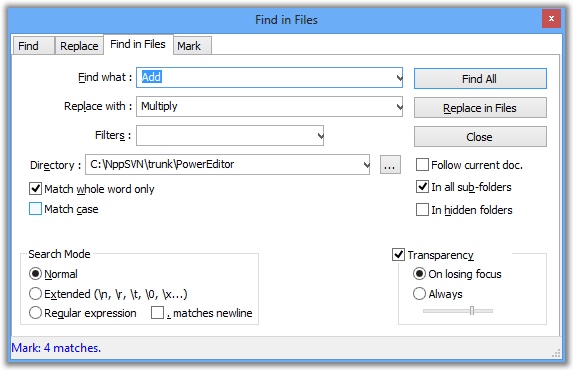

| Précédent: Remplacer | Rechercher | Suivant: Fenêtre de résultat de la recherche |

La boîte de dialogue Rechercher dans les fichiers effectue la recherche, sur le filtre donné,
sur tous les fichiers répondant à ce critère.
Les filtres d'entrée filtrent sur le nom et l'extension; une liste déroulante rappelle les filtres précédents. Les extensions sont séparées par des espaces, si ^musieurs sont fournies.
Le champ Répertoire vous permettra d'indiquer le répertoire racine de la recherche qui, par défaut, est le répertoire du fichier actif (pour plus d'informations, voir Préférences).
Quels que soient la recherche et le filtre de répertoire conforme au document , on peut forcer la recherche sur le fichier en cours par la sélection la case Suivre le doc. actif
Lorsque Sous-dossiers est cochée, tous les sous-répertoires sont parcourus dans la recherche de résultats. Lorsque dossiers cachés est cochée, tous les sous-répertoires cachés seront également inspectés (par défaut, ils seront ignorés). va lancer la recherche, va exécuter le remplacement.
Les résultats sont affichés dans la fenêtre des résultats de la recherche.